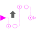

SuperSampleSuper-sample the clocked Boolean input signal and provide it as clocked output signal |

|
Information
This information is part of the Modelica Standard Library maintained by the Modelica Association.
This block for Boolean signals works similarly as the corresponding block for Real signals (see RealSignals.Sampler.SuperSample).
Analog to the corresponding Real signal block example there exists an elementary example for this Boolean block.
Parameters (2)
| inferFactor |
Value: true Type: Boolean Description: = true, if super-sampling factor is inferred |
|---|---|
| factor |
Value: 1 Type: Integer Description: Super-sampling factor >= 1 (ignored if inferFactor=true) |
Connectors (2)
| u |
Type: BooleanInput Description: Connector of clocked, Boolean input signal |
|
|---|---|---|
| y |
Type: BooleanOutput Description: Connector of clocked, Boolean output signal (clock of y is faster as clock of u) |
Used in Examples (1)
|
Modelica.Clocked.Examples.Elementary.BooleanSignals Example of a SuperSample block for Boolean signals |